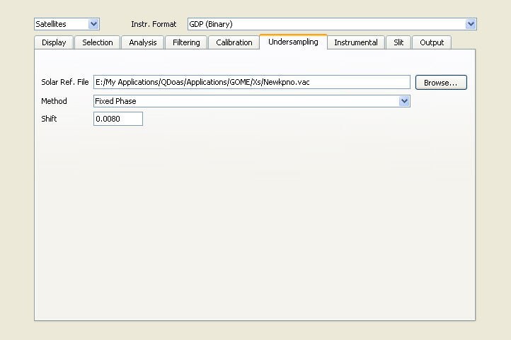

QDOAS Projects Properties : Undersampling page

The undersampling is a well-known problem of GOME onboard the satellite ERS-2. It arises from the poor sampling ratio of the GOME instrument (2 to 3 pixels/FWHM of the resolution of the spectrometer) which results in a lost of spectral information when interpolating earthshine spectra during the DOAS fitting process. The problem can be corrected using ad-hoc cross-sections obtained by simulating the effect from a high-resolution solar reference. Undersampling cross-sections can be pre-calculated using the QDOAS Undersampling tool or they can be calculated in real time, just after the wavelength calibration procedure using the corrected grid and the determined slit function. Further details can be found in the QDOAS software user manual.
By default no undersampling correction is applied.
| From file | Undersampling cross-sections are provided in files like
usual cross-sections. These files might be created using
the QDOAS Undersampling tool.
The files have to be provided in the Analysis windows properties (Molecules or Predefined paremeters page according to the selected analysis method). |
| Fixed phase | QDOAS uses the information derived from the
calibration procedure to create the undersampling cross
sections, with a fixed value of the shift. The selection
of this method is recommended. |
| Automatic phase | The undersampling cross-sections are calculated at each
iteration of the analysis procedure, using the fitted
value for the shift between the reference and the measured
spectra. This method is rather time consuming and
only applicable for testing purposes. |
In Fixed phase and Automatic phase methods, undersampling cross-sections are calculated from a high resolution solar spectrum convolved on an oversampled and an undersampled grids with the instrument slit function (according to calibration options, the slit function characterized by the calibration procedure or a slit function provided by the user in the slit page of projects Properties).
This field operates only in Fixed phase method.